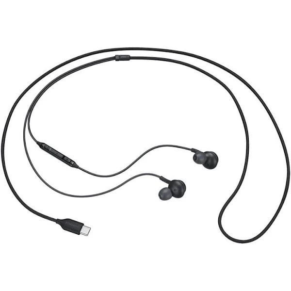

Les écouteurs fillaires classiques
L'un des meilleurs sur le marché est le Samsung 3.5mm Earphones (EO-IA500)!!!
Noter 5 étoiles sur 5 sur google!

Description :
- sensibilité : 93.2 dB
- longeur : 1.2 m
- impédence : 32 ohm
- fréquence de raisonnance : 20 ~ 20 kHz
- couleur : noir
Atouts:
- un speaker bidirectionnel
- un grand confort
- tient bien dans les oreilles